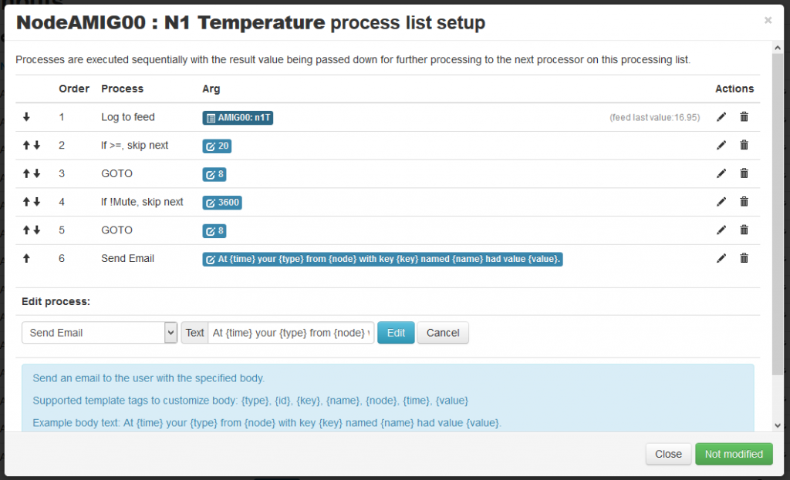
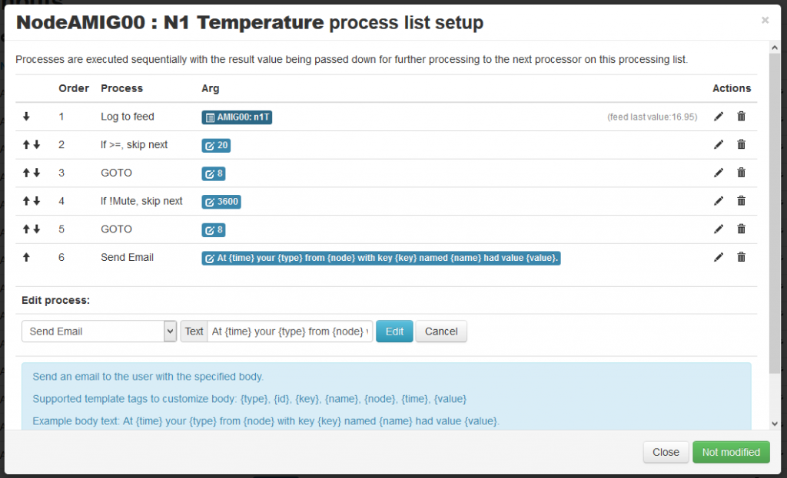

A new set of processlist processors are now available to create events that replace the old Events Module.
Quick example to send an email every hour if the feed value goes above 20:

Archived Forum |
|
New EventP Module on 9.3 2016.01.26Submitted by chaveiro on Tue, 26/01/2016 - 02:50A new set of processlist processors are now available to create events that replace the old Events Module. Quick example to send an email every hour if the feed value goes above 20:  » |
Re: New EventP Module on 9.3 2016.01.26
chaveiro for president! (or prime minister or whatever)
Can't wait to try it out.
JD
Re: New EventP Module on 9.3 2016.01.26
Will this new method send a message every mute time duration regardless of how long device has been in this status?
For example criteria is when feed is zero, mute 60 seconds.
0:00 Feed is zero - Sends email
1:00 Feed stays zero - sends email
....
OR
0:00 Feed is zero - does nothing
0:30 Feed is NOT zero - does nothing
1:00 Feed is zero - does nothing
2:00 Feed stays zero - Sends email.
The second is the type of alert I need notifying me when a certain feed has met a certain condition for a specified amount of time continously. For example a heat pump has locked up and is not running. So it measures less than 5W for over 12 hours. Therefor I want an email notification saying "Please manually reset the breaker". Is this possible?
Thanks
Re: New EventP Module on 9.3 2016.01.26
Chaveiro very interesting and useful!!
But I am going to present another common case.
If I need to send only one message and not several messages with a certain frequency,
Is possible to do that with the available operations?
If the answer is yes. What is the best way to implement these behaviour with the available operations?
Thanks in advance.
Re: New EventP Module on 9.3 2016.01.26
Would it be possible to have a process which publishes to a MQTT topic, instead of sending an email.
If so, it would be great for control nodes, or to interact with node-red.
Paul
Re: New EventP Module on 9.3 2016.01.26
Paul - Will the "publish to MQTT" process not do what you want?
For me, by far the best feature of the old event module was "Notify my Android". Although this could probally be easily implemented in-directly by introducing a "send url" process that could be used for a whole range of stuff if we could write out a url including any apikey etc using the same fields available to the "Send email" process.
Paul
Re: New EventP Module on 9.3 2016.01.26
Paul - Will the "publish to MQTT" process not do what you want?
Yes & No!
I suppose what's missing from the "publish to MQTT" process is being able to set a user definable fixed value, rather than the 'feed value'.
I was thinking that if we could have a event process to publish to a MQTT topic, then it could be used to drive any MQTT control node, for example the MQTT relay which is in the OEM store.
A criteria could be then set in emoncms to activate/deactive the relay to control water heating, ventilation, room heating etc.
As the relay expects a '0' or a '1', it should be possible to format the process accordingly, switching the relay, so, say if the temperature was < 21 the MQTT message could be '1', and if it's >22 the message could be '0'.
I currently use "publish to MQTT" to publish a feed value to node-red, and use logic within node-red to determine if the criteria has been matched, re-publishing a '0' or '1' as necessary.
Paul
EDIT - with some thought about another issue, YES it can be done through existing processes!
Re: New EventP Module on 9.3 2016.01.26
awtivy, the example on this topic printscreen is for your first case, but if you re-do the processlist it can work for your second case. you may need to use two mute processes to build your logic.
MUTE: A time elapsed dependent condition, first time a processlist passes here the flow is unchanged. Next times the same processlist passes here, if the specified value time (in seconds) has not elapsed, flow will skip next process.
RDCH106: no its not suported, mute works on a time base to give some hysteresis. To only occur once, you would need a semaphore like process that does not exist.